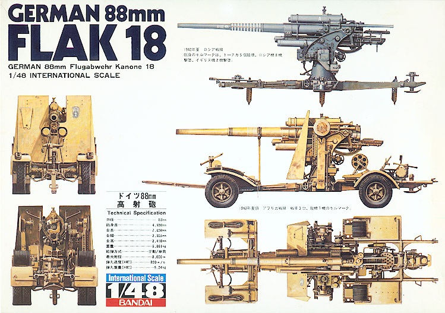
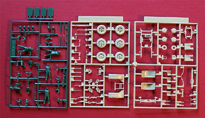
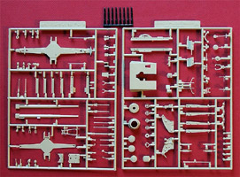
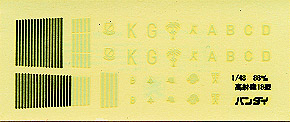

{kind=link}
{kind=link}


Bandai 1/48 German 88mm FLAK 18

Kit #8
MSRP $32.50
Images and text Copyright � 2005 by Matt Swan
Developmental Background
In 1928 the first prototypes of the infamous German 88mm cannon were produced. These were developed over the next few years into the Flak 18. Flak is a German abbreviation for Fliegerabwehrkanone which means anti-aircraft gun however the gun became legendary as the �Kraut 88�. In order to evade the provisions of the Versailles Treaty Krupp engineers were sent to Bofors in Sweden to develop the cannon. They created a weapon that was sturdy, reliable and easy to build. In 1933 it entered service in the German army and saw first action during the Spanish Civil War. During this action it was discovered that the gun was not only very useful in its intended role as an anti-aircraft weapon but was also very effective when used against enemy armor and ground positions.
The Flak 18 was mounted on a cross shaped gun carriage that could quickly be collapsed and mounted on road wheels for rapid redeployment. The cross shaped gun mount allowed for the gun to fire in any direction unlike earlier conventional gun carriages and the ease of redeployment meant that it could hop-scotch ahead of ground forces to provide artillery support. Due to the size and weight of the gun only large vehicles could handle its transport and as such it was commonly partnered with the Sd.Kfz.7 Half-Track. Initially the gun was intended to fire as many as 15 rounds per minute but later modifications and crew training allowed it to increase the rate of fire to as many as 25 rounds per minute. This tended to be somewhat rough on the barrels. Later refinements in the gun included multi-part barrels to facilitate rapid barrel replacement.
Initially used for anti-aircraft and anti-vehicle purposes later in the war the 88 was grouped in large formations for defense of German cities and installation directed by single battery controllers. As was seen with most military equipment the Germans developed this particular system throughout the war years and each modification received a new designation moving from the Flak 18 designation to Flak 36 (multi section barrel). Flak 37 (electronics improvements and barrel improvements), Flak 39 (improved gun carriage), Flak 41 (mounted on a turn table) and Flak 42 (never accepted into service). Flak 18s saw operational service right into 1945.
The Kit
Bandai was putting armor kits like this on hobby store shelves in the 1970s, well ahead of the market. Not only were they exceptional simply because they were 1/48 scale armor but the overall level of detail and quality of kit was beyond virtually anything else on the market in any scale. Unfortunately many of these leading edge molds were lost in a shipping accident and most of the kits are no longer produced nor have any hope of ever being produced again. Not everything was lost though; this particular kit is still produced by FROG and can still be found in some internet hobby shops.


Inside this average sized box we have six trees of parts. The anti-aircraft gun parts are all done in a light gray high pressure injection molding covered by four sprues. All these parts are free of flash and very crisp in their molding. Surface detail is very good and there are plenty of small pieces for more prominent details. The parts fit together fairly well with little clean-up needed. Unlike the model�s larger 1/35 scale cousins where you get poly wheels these wheels are simply hard caste plastic. They still have good tread and hub details. We also get one small sprue that includes eight 88mm shells done in black polystyrene. The cross-mount gun carriage can be built on road wheels or opened for operations and includes ground securing spikes.
The kit includes a set of crew figures on a separate sprue done in dark green plastic. Here we get four more 88mm shells and six crew men. The crewmen are broken down into pieces with individual arms, helmets and in some cases, legs. You can follow the kit instructions and build six men in predetermined positions or you can explore the possibilities of changing limb positions to fit the crew to the gun better. Taking a parts inventory we have 174 pieces devoted to the gun assembly, 36 pieces for the crewmen and 8 additional pieces for ammunition besides the four included with the crew for a grand total of 218 pieces in the box.
Decals and Instructions

Let�s talk about these decals first. The decals are screen printed black and white material on white paper. Due to this I have adjusted the contrast considerably in the scan to the left just to make the material visible for the review. Decals include kill strips for the barrel and a selection of unit markings. Printing seems to be nice and crisp and color density looks good. Because of their age the decals have a tendency to be brittle and should be coated with contemporary decal fixative before application. When putting them in place a good gloss base is necessary and some good decal setting solution will be needed to get them to lie down properly. In addition to this they must be sealed with a flat coat or they will want to lift off the model once they dry.
The kit comes with two sets of assembly instructions; one for the gun and one for the crewmen and all in Japanese only. Unless you read Japanese you�ll need to spend some serious time studying the assembly pictures before you begin to glue parts. The gun instructions include a parts map and eighteen exploded view assembly steps along with a single panel on decal placement and gun carriage positioning. The exploded views are very well done with small detail views of some steps. Color call-outs appear to be scattered through the instructions but that brings us right back to the �reading Japanese� thing. Fortunately we have some very nice full color box art with both standard gray and African desert schemes pictured. This in conjunction with reference material should be more than adequate for proper painting.
The second set of instructions for the crew is a small single sheet that covers basic assembly and painting (more of the �reading Japanese� stuff) and covers some suggested crew placement ideas. In the end if you spend some time studying the exploded views and reference some basic German painting material this should build up with few problems.
Conclusions
Okay, so its not and airplane but it certainly had some impact on airplanes and makes for a great diorama accessory. Bandai was so far ahead of the times when they released these armor kits that even now they are more than a match for anything that even Tamiya is putting out in this scale. The parts are well cast, fit together very well, provide for an exceptional level of detail and are free of flash. The instructions, while all done in Japanese do have well enough detailed exploded views to allow any modeler of moderate skill and experience to put together a very impressive Flak 18.
Believe it or not there actually is something on the aftermarket for this kit. Jaguar makes a set of 1/48 scale 88mm shells and shell casings that includes some shipping cases as well. You can also surf the Internet auction sites for a set of shells and cases that Bandai did in the 1970s for this kit. I highly recommend having one of these kits if not for building and displaying next to your Luftwaffe subject then at least for the collectors aspect of the kit.